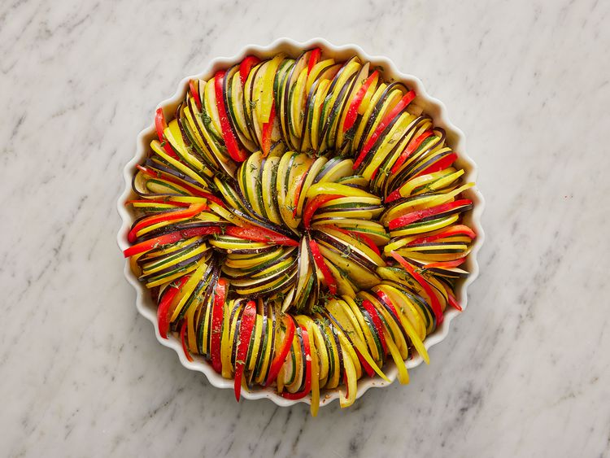

Home
Ratatouille

Description
Ratatouille is a classic French vegetable stew that originates from Provence, made with a colorful medley of
fresh ingredients like eggplant, zucchini, bell peppers, tomatoes, onions, and herbs. The vegetables are
typically sautéed and simmered until tender, allowing their flavors to meld beautifully. Light, hearty, and full
of rustic charm, ratatouille can be served hot or cold, as a main dish or a flavorful side.
Ingredients
- 1 (6 ounce) can tomato paste
- ½ onion, chopped
- ¼ cup minced garlic
- ¾ cup water
- 4 tablespoons olive oil, divided
- salt and ground black pepper to taste
- 1 small eggplant, trimmed and very thinly sliced
- 1 zucchini, trimmed and very thinly sliced
- 1 yellow squash, trimmed and very thinly sliced
- 1 red bell pepper, cored and very thinly sliced
- 1 yellow bell pepper, cored and very thinly sliced
- teaspoon fresh thyme leaves, or to taste
- 3 tablespoons mascarpone cheese
Steps
- Preheat the oven to 375 degrees F (190 degrees C).
- Spread tomato paste onto the bottom of a 10-inch square baking dish. Sprinkle with onion and garlic. Stir in
water and 1 tablespoon olive oil until thoroughly combined. Season with salt and pepper.
- Arrange alternating slices of eggplant, zucchini, yellow squash, red bell pepper, and yellow bell pepper,
starting at the outer edge of the dish and working concentrically towards the center. Overlap slices a
little to display colors.
- Drizzle vegetables with remaining 3 tablespoons olive oil; season with salt and pepper. Sprinkle with thyme
leaves. Cover vegetables with a piece of parchment paper cut to fit inside.

- Bake in the preheated oven until vegetables are roasted and tender, about 45 minutes. Serve with dollops of
mascarpone cheese.